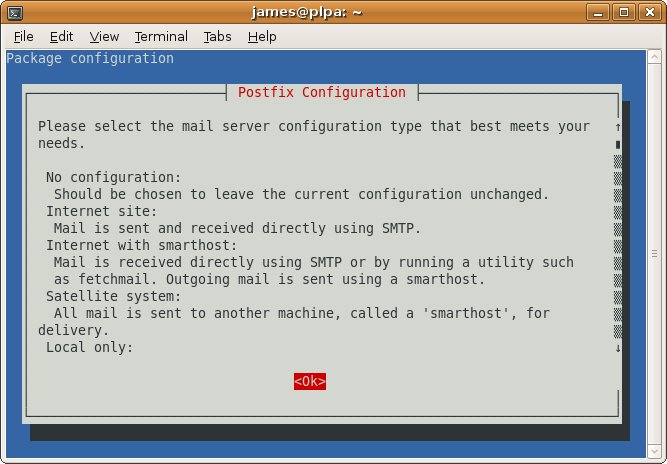
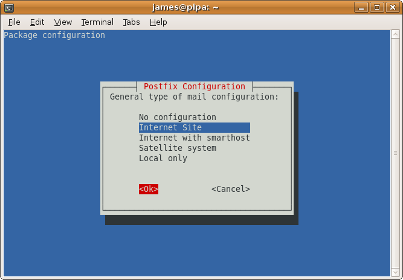
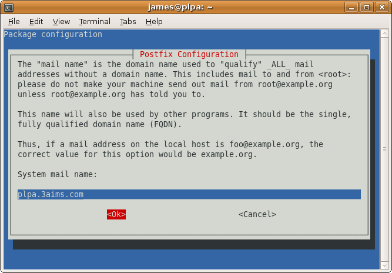
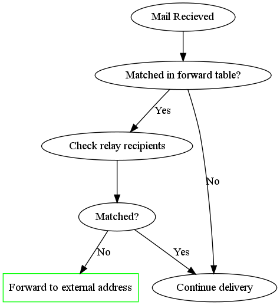
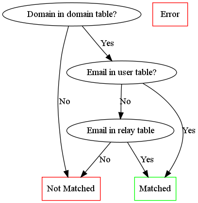

Postfix Gateway with PostgreSQL
Recipes > Core Recipes > .. > Postfix Gateway with PostgreSQL| Pre-Requisites: | None |
|---|---|
| Required Reading: | None |
Contents
Introduction
This tutorial explains how to set up a server to act as a mail gateway, obtaining its configuration from a PostgreSQL database and forwarding mail on to the appropriate SMTP server. The set up will not include any sort of mail virus scan or spam filter and will not allow users to use the gateway to send emails. These features are intended to be implemented on another server to which this gateway forwards emails.
Prepartaion
Ensure you have set up a machine where each of the tutorials below has been followed:
- Update and Upgrade
- Add a User and Configure sudo
- Basic SSH Security
- Locales
- Times and Dates
- Firewall
If you are following the Protocol Level Proxies tutorial this machine will be PLP A the first time you follow this tutorial and PLP B when you set up a second server for extra resilience. The hostname we'll use is plpa.example.com.
Install the Main Packages
Because this server is not designed to serve as a mail rely for users we don't need to install any of the SASL modules (we don't need TLS either but this seems to come as standard anyway). We just have a simple Postfix and PostgreSQL set up so these are the only packages which need to be installed:
$ sudo apt-get install postgresql postfix-pgsql
During the install you'll be asked some questions. Answer as follows:
Select Ok
Select Internet Site
Enter the full hostname of the system. We'll set up the virtual domains (such as example.com) later on.
Aliases
The install will continue and during the output you'll see this warning:
WARNING: /etc/aliases exists, but does not have a root alias.
When mail is to be delivered locally, the local delivery agent runs each local recipient name through the aliases database. The mapping does not affect addresses in message headers. Local aliases are typically used to implement distribution lists, or to direct mail for standard aliases such as postmaster to real people.
If you run the command below you'll see that /etc/aliases is being used for local aliases:
$ sudo postconf alias_maps alias_maps = hash:/etc/aliases
It is important that the postmaster email address works so make sure that postmaster points to root and root to your own username or your email address, e.g. like this:
... postmaster: root root: postmaster@yourdomain.tld ...
or like this (if owner is your own username):
... postmaster: root root: owner ...
Edit /etc/aliases with one of these changes.
Whenever you modify /etc/aliases, you must run this afterwards:
$ sudo newaliases
Then restart Postfix:
$ sudo /etc/init.d/postfix restart
Create The PostgreSQL Database For Postfix/Dovecot
PostgreSQL is installed with the configuration in /etc/postgresql/8.3/main and the data in /var/lib/postgresql/8.3/main.
If you run netstat you'll see that PostgreSQL is only listening on the localhost.localdomain interface:
$ sudo netstat -tap | grep postgresql tcp 0 0 localhost.lo:postgresql *:* LISTEN 17856/postgres
We are going to need users from different servers to be able to connect to PostgreSQL so we need to change the settings.
Edit the /etc/postgresql/8.3/main/postgresql.conf file:
sudo -u postgres vim /etc/postgresql/8.3/main/postgresql.conf
Change:
#listen_addresses = 'localhost'
to:
listen_addresses = '*'
Now is you run netstat again you'll see it is listening on all interfaces:
$ sudo netstat -tap | grep postgresql tcp 0 0 *:postgresql *:* LISTEN 18270/postgres
To create PostgreSQL users and databases you have to be the postgres user. Let's create a new database called mail:
sudo -u postgres createdb mail --encoding=UTF8
Now let's create the user mail_admin with the password mail_admin_pass:
$ sudo -u postgres createuser -SRDP mail_admin Enter password for new role: Enter it again:
You'll need to enter the password twice.
The default PostgreSQL set-up is to allow local access for all users to all databases when connecting with a hostname. This means you can now connect like this:
$ psql -W -U mail_admin mail -h localhost
Password for user mail_admin:
Welcome to psql 8.3.7, the PostgreSQL interactive terminal.
Type: \copyright for distribution terms
\h for help with SQL commands
\? for help with psql commands
\g or terminate with semicolon to execute query
\q to quit
SSL connection (cipher: DHE-RSA-AES256-SHA, bits: 256)
mail=>
We also want users to be able to connect from other machines though. If you try the same from a different machine you'll get this (here 188.40.40.171 is the server PostgreSQL is running on):
$ psql -W -U mail_admin mail -h 188.40.40.171 Password for user mail_admin: psql: FATAL: no pg_hba.conf entry for host "188.40.40.173", user "mail_admin", database "mail", SSL off
Tip
You can install the psql utility on the remote server like this:
sudo apt-get install postgresql-client
To allow access, edit the /etc/postgresql/8.3/main/pg_hba.conf file and add these lines at the end:
# Allow mail_admin to connect to the mail database from 188.40.40.* hostssl mail mail_admin 188.40.40.0/24 md5
The 188.40.40.0/24 says that any computer in the 188.40.40.* subnet can connect; you'll need to alter this for the range of machines you want to grant access to.
Now restart PostgreSQL:
sudo /etc/init.d/postgresql-8.3 restart
If you try to connect from the remote server now you'll see that it works successfully.
For more information see the PostgreSQL manual: http://www.postgresql.org/docs/8.3/static/client-authentication.html
Next, we go to the PostgreSQL shell. You'll need to enter the password you just set up for the PostgreSQL root user:
Create the tables we need:
Note
These tables will be used by both Postfix on the PLPs, Postfix on the individual user servers and Dovecot on the user servers. This means there is a lot of detail involved in the way they are set up so do take care to read and understand the descriptions which follow later in this recipe.
CREATE TABLE domain (
domain varchar(50) NOT NULL,
node varchar(50),
comment varchar(500),
PRIMARY KEY (domain)
);
CREATE TABLE forward (
source varchar(80) NOT NULL,
destination TEXT NOT NULL,
comment varchar(500),
PRIMARY KEY (source)
);
CREATE TABLE relay (
source varchar(80) NOT NULL,
node varchar(50) NOT NULL,
comment varchar(500),
PRIMARY KEY (source)
);
CREATE TABLE mailbox (
email varchar(80) NOT NULL,
password varchar(20) NOT NULL,
quota bigint DEFAULT 10485760,
node varchar(50) NOT NULL,
comment varchar(500),
PRIMARY KEY (email)
);
CREATE TABLE transport (
domain varchar(128) NOT NULL default '',
transport varchar(128) NOT NULL default '',
node varchar(50) NOT NULL,
comment varchar(500),
UNIQUE (domain)
);
When you are done type \q to return to the command line.
Let's talk through what each of the tables is for in this setup.
The domain Table
The domain table stores all the domain names which Postfix should recieve emails for. Postfix won't forward or relay domains which aren't in this table so it is important that every domain which has this gateway in its MX records is added to this table.
| domain | node | comment |
|---|---|---|
| example.com | maila |
- domain
- The domain name for the domain to forward or rely emails for
- node
- The user server which will handle mailboxes for this domain or nothing if the domain only has email addresses which are forwarded elsewhere or have a relay transport set up for them.
- comment
- An optional text string describing the particular entry in the table. This is not used by Postfix or Dovecot but is useful to remind you what a particular entry is for.
The forward Table
The forward table is for forwarding from one email address to another. The email addresses can be in the same domain or different domains. The source email must be a domain listed in the domain table but the destination doesn't have to be.
If source is simply an @ character followed by a domain (eg @example.com), Postfix will intercept all emails for that domain and forward them to the destination address. This is a so-called catch all email address. You should usually avoid catch all email addresses because they typically pick up a lot of spam.
| source | destination | comment |
|---|---|---|
| info@example.com | james@example.com |
- source
- The source email address or catch all string (must be a domain in the domain table)
- destination
- The destination email address (can be any valid email address)
- comment
- An optional text string describing the particular entry in the table. This is not used by Postfix or Dovecot but is useful to remind you what a particular entry is for.
All forwarding is done by the PLPs, the individual user servers don't forward emails.
You can forward one email to multiple destinations by adding multiple rows to the forward table.
The mailbox Table
In our set up, a user's email address will also be their username so the mailbox table stores information about both email addresses and mailboxes. The same email address and password is used for sending mail via SMTP and accessing email vie POP or IMAP. This table is mainly used by the individual user mail servers but the PLPs use is to work out which email addresses they should relay mail for.
| password | quota | node | comment | |
|---|---|---|---|---|
| test@example.com | adJOa09aYud8. | 10485760 | maila |
- The email address this mailbox can be accessed with
- password
- An encrypted version of the password
- quota
- The maximum size of files in the mailbox (in bytes). The default value is 10485760 bytes which is 10MB.
- node
- The name of the user mail server which will handle this mailbox.
- comment
- An optional text string describing the particular entry in the table. This is not used by Postfix or Dovecot but is useful to remind you what a particular entry is for.
The relay Table
The relay table tells Postfix which email addresses it can relay mails for in addition to the email addresses in the mailbox table. The domain part of each entry must be listed in the domain table.
If source is simply an @ character followed by a domain (eg @example.com), Postfix will relay all emails for that domain. This is a so-called catch all email address. You should usually avoid catch all email addresses because they typically pick up a lot of spam. Instead, add an entry for each individual email address which needs to be relayed.
| source | node | comment |
|---|---|---|
| info@example.com |
Caution!
You would only ever want to use the relay table if you were setting up your own transport. For example to relay emails to a server running the Mailman mailing list software. Ordinarily, relaying is done automatically based on the emails in the mailbox table.
- source
- The source email address or catch all string (must be a domain in the domain table, the domain must be listed in the transport table)
- node
- If one of the user servers also wants to be able to relay domains, it can add an entry to this table too, specifying its node name in this column. In order for the email to reach the user server, it would already have had to have been relayed by the PLP so the PLPs ignore the node column and relay everything in the table anyway.
- comment
- An optional text string describing the particular entry in the table. This is not used by Postfix or Dovecot but is useful to remind you what a particular entry is for.
The transport Table
The transport table tells postfix how to relay emails for the domains it can relay for. If you think about it, the domains which we are handling will be set up so that their MX records point to the PLPs (which is why the PLPs recieve the emails rather than the user servers). That means that Postfix doesn't know where to relay the emails to unless you tell it which is why we need the transport table.
The individual user servers may also want to relay certain domains so they'll need to set up their own transports. They can reuse the transport table but put their node name in the node column. The PLPs will only look at rows without a node value specified.
is optional, it is for advanced users. It allows to forward mails for single users, whole domains or all mails to another server. For example the table below would result in all emails for example.com being forwarded via the
| domain | transport | node | comment |
|---|---|---|---|
| example.com | smtp:[1.2.3.4] |
- domain
- The domain for which this transport applies
- transport
- How the mail should be relayed. In the example the mail is handled using the SMTP protocol to the server with the IP address 1.2.3.4. You can also specify a domain name (if you miss out the square brackets) but that would require a DNS lookup of the MX record each time. For example: smtp:mail.example.com.
- node
- The node for which this transport should apply. The PLPs will only lookup entires without a node. The individual user servers will only lookup entires with a their node name in the node column.
- comment
- An optional text string describing the particular entry in the table. This is not used by Postfix or Dovecot but is useful to remind you what a particular entry is for.
Note
The PLP A and B servers will actually ignore the node column on the domain, relay and mailbox tables becuase they need to handle all domains and email addresses to be able to forward them correctly.
They do respect the node column on the transport table though so that you can set the PLPs to relay mail elsewhere.
Relaying vs Forwarding
In order to understand the mail setup properly you need to know the difference between relaying and forwarding. The best way to think of it is that forwarding is like re-addressing a letter and putting back in the postbox whereas relaying is like the postman taking the letter to the correct sorting office so that someone else can deliver it.
In terms of our setup, adding an entry to the forward table just re-addresses the email and sends it on its way again, adding an entry to the relay table tells Postfix that it can pass the email on to the correct server via the transport listed for that domain in the transport table.
When deciding what to forward, Postfix looks for email addresses or catchalls in the forward table. When deciding what to relay, Postfix looks for email addresses or catchalls in the relay table and for email addresses in the mailbox table. This means that any email address which has a mailbox gets relayed.
Postfix always tries to forward emails before it relays them. This means that if any entries exist in the forward table they will be used first. Only then will the email be relayed if it wasn't matched. This means that if you use a catch all email address Postfix won't ever check that the email address actually exists as a mailbox.
Understanding The Logic
In this section we'll go through what happens when an email arrives. Bear in mind that the PLPs are supposed to do all forwarding and relaying. By the time an email arrives at one of the user servers it should be guaranteed to be for a user mailbox, otherwise the PLPs should have forwarded or relayed it elsewhere.
Dealing with Aliases (Forwarding)
When a mail arrives at the PLP the first thing that happens is a check to see whether it needs to be forwarded elsewhere. Here's what happens:
An email is matched in the forward table if it is listed in the source field or if the domain part is listed in the source field as a catch all forward, (ie it looks like @example.com).
To check whether an email is one of ours, the relay recipients are checked. This is done as follows:
Only emails which are matched in the forward table but not matched by the relay recipient check are directly forwarded on. The other's are delivered normally.
Normal Delivery
If an email is not matched in the forward table or is matched but is found to be one of the email addresses we wish to handle, the following process occurs:
- First the email is checked to see if it is one of ours (this is the same process as described above for checking the relay recipients and only occurs of the check hasn't already been done)
- If there is a match the domain is looked up in the transport table to determine where to send it to
- Otherwise the email is rejected and the person sending it gets a "Relay Access Denied" message.
Create the Postfix Configuration
Now that we've explained the tables, let's create the Postfix configuration which will use the tables on the PLPs.
Make a /etc/postfix/postgresql directory to keep the PostgreSQL configuration in:
$ sudo mkdir /etc/postfix/postgresql
Now make sure you are in a directory you have write access to such as your home directory:
$ cd
Setting up Relay Functionality
Now run these commands to create text files with the required postfix configuration in your home directory and move them to the /etc/postfix/postgresql directory. The beauty of this approach is that you can copy and paste everything below onto the command line rather than having to manually create and populate the 6 files.
You'll need to change the password in each example from mail_admin_pass to whatever you used for the mail_admin PostgreSQL user earlier in the tutorial.
cat <<EOF> transport_maps.cf user = mail_admin password = mail_admin_pass dbname = mail query = SELECT transport FROM transport WHERE domain='%s' AND (node='' or node is NULL) hosts = 127.0.0.1 EOF sudo mv transport_maps.cf /etc/postfix/postgresql cat <<EOF> relay_domains.cf user = mail_admin password = mail_admin_pass dbname = mail query = SELECT domain AS virtual FROM domain; hosts = 127.0.0.1 EOF sudo mv relay_domains.cf /etc/postfix/postgresql cat <<EOF> relay_recipient_maps.cf user = mail_admin password = mail_admin_pass dbname = mail # This is a bit complex but it needs to lookup the email address in three places query = SELECT 1 FROM mailbox WHERE email='%s' OR EXISTS (SELECT source FROM relay WHERE source='%s') OR EXISTS (SELECT source FROM relay WHERE source='@'||'%d') hosts = 127.0.0.1 EOF sudo mv relay_recipient_maps.cf /etc/postfix/postgresql
Let's discuss these.
- transport_maps.cf
- This specifies where mail for a particular domain should be sent. The server will only transport mails for entries where the node isn't explictly specified
- relay_domains
- These are the domains for which the mail gateway will relay mails to the destinations specified in the transport table. If a domain is not used on your system then Postfix will reject emails.
- relay_recipient_maps
- Postfix will only relay email address for which the query returns a value. These are emails in the mailbox or relay tables. If the email address isn't matched, Postfix will reject the email before the it is even delivered. This quickly cuts down spam.
Now set all the permissions:
sudo chmod -R o= /etc/postfix/postgresql sudo chown -R root:postfix /etc/postfix/postgresql
Now configure postfix. Replace plpa.example.com with the correct fully qualified domain name.
sudo postconf -e 'myhostname = plpa.example.com'
Send mail from this machine as "someone@example.com", so that no reason exists to ever send mail to "someone@plpa.example.com".
sudo postconf -e 'mydestination =' sudo postconf -e 'myorigin = example.com'
Disable local delivery:
sudo postconf -e 'local_recipient_maps =' sudo postconf -e 'local_transport = error:local mail delivery is disabled'
Also comment out the local delivery agent in etc/postfix/master.cf.
Set some standard options:
sudo postconf -e 'message_size_limit = 30720000' sudo postconf -e 'mynetworks = 127.0.0.0/8' sudo postconf -e 'smtpd_recipient_restrictions = permit_mynetworks, reject_unauth_destination'
Set up the relay configurations we just created:
sudo postconf -e 'relay_domains = proxy:pgsql:/etc/postfix/postgresql/relay_domains.cf' sudo postconf -e 'relay_recipient_maps = proxy:pgsql:/etc/postfix/postgresql/relay_recipient_maps.cf' sudo postconf -e 'transport_maps = proxy:pgsql:/etc/postfix/postgresql/transport_maps.cf'
Enable all the appropriate proxies:
sudo postconf -e 'proxy_read_maps = $relay_domains $relay_recipient_maps $transport_maps'
Adding Some Test Data
To check the Postfix configuration you'll need to add some test data to PostgreSQL.
$ psql -W -U mail_admin mail -h 188.40.40.171 Password for user mail_admin:
Now enter some commands:
mail=> INSERT INTO transport (domain, transport, node) VALUES ('server1.example.com', 'smtp:[188.40.40.173]', '');
Notice that we use the IP address of a domain name in the transport column to avoid a DNS lookup and that we've specified the node '' so that the maila.example.com doesn't also apply the rule.
Next we need to add some rules for maila. First we need to tell it that it should handle the server1.example.com domain:
mail=> INSERT INTO domain (domain, node) VALUES ('server1.example.com', 'maila');
mail=> INSERT INTO domain (domain, node) VALUES ('other.example.com', 'maila');
Finally we create a user for the james account. To do this you need access to the crypt() and gen_salt() functions in PostgreSQL. You can add them by pasting these two commands into the PostgreSQL shell:
CREATE OR REPLACE FUNCTION crypt(text, text) RETURNS text AS '$libdir/pgcrypto', 'pg_crypt' LANGUAGE C IMMUTABLE STRICT; CREATE OR REPLACE FUNCTION gen_salt(text) RETURNS text AS '$libdir/pgcrypto', 'pg_gen_salt' LANGUAGE C VOLATILE STRICT;
You can now create a user for the james account:
mail=> INSERT INTO mailbox (email, password, quota, node) VALUES ('james@server1.example.com', crypt('yourpassword', gen_salt('md5')), 10485760, 'maila');
Let's also set up some relay information:
mail=> INSERT INTO relay (source, node) VALUES ('david@server1.example.com', 'maila');
mail=> INSERT INTO relay (source, node) VALUES ('@other.example.com', 'maila');
Now we can run some Postfix tests.
mail=> \q
Test Like this
$ sudo postmap -q "server1.example.com" pgsql:/etc/postfix/postgresql/transport_maps.cf smtp:[192.168.100.4] $ sudo postmap -q "james@server1.example.com" pgsql:/etc/postfix/postgresql/relay_domains.cf server1.example.com $ sudo postmap -q "james@other.example.com" pgsql:/etc/postfix/postgresql/relay_domains.cf server1.example.com,other.example.com $ sudo postmap -q "james@server1.example.com" pgsql:/etc/postfix/postgresql/relay_recipient_maps.cf 1 $ sudo postmap -q "david@server1.example.com" pgsql:/etc/postfix/postgresql/relay_recipient_maps.cf 1 $ sudo postmap -q "unknown@other.example.com" pgsql:/etc/postfix/postgresql/relay_recipient_maps.cf 1
It doesn't matter what relay_recipient_maps returns, as long as it returns something for valid email addresses, in our setup it returns 1.
If you get this error:
postmap: warning: connect to pgsql server 127.0.0.1: FATAL: password authentication failed for user "mail_admin"?
It is because you forgot set the correct password in either PostgreSQL itself or the .cf files you just created. Go back, correct the problem and try again.
Useful Commands
List the default Postfix settings:
$ sudo postconf -d
List the non-defaults (ones you've changed):
$ sudo postconf -n
Now restart
$ sudo /etc/init.d/postfix restart
Setting up Virtual Aliases for Forwarding
Now that the relay part of the configuration is set up, let's set up the forwarding part. Once again, change directory to one your user has write access to:
$ cd ~
Now create the configuration files which tell Postfix how to get the data it needs:
cat <<EOF> virtual_forward.cf user = mail_admin password = mail_admin_pass dbname = mail query = SELECT destination FROM forward WHERE source='@'||'%d' OR source='%s' hosts = 127.0.0.1 EOF sudo mv virtual_forward.cf /etc/postfix/postgresql cat <<EOF> virtual_email2email.cf user = mail_admin password = mail_admin_pass dbname = mail query = SELECT email FROM mailbox WHERE email='%s' hosts = 127.0.0.1 EOF sudo mv virtual_email2email.cf /etc/postfix/postgresql
virtual_forward.cf and virtual_email2email.cf
These two files together are used to configure Postfix's virtual_alias_maps. They enable catchall email address to work. The reason they are both needed is to ensure that if you have a catchall address and a specific user as well using the same domain, that the user's email gets forwarded to them and not to the catchall address which should be used for all other email at that domain. Catchall email addresses catch a lot of spam as you can imagine!
Here are the postfix settings you need to apply:
$ sudo postconf -e 'virtual_alias_maps = proxy:pgsql:/etc/postfix/postgresql/virtual_email2email.cf, proxy:pgsql:/etc/postfix/postgresql/virtual_forward.cf'
The reason there are two configurations is that we don't want any of the forward addresses which could be set up in the forward table from overriding the existing mailboxes (paticularly if it is a catch all address which has been set up). If you do want a forward to override a mailbox, remove the row from the mailbox table.
Tip
The use of proxy: here should mean Postfix has read only access to PostgreSQL but I haven't tested that.
Enable all the appropriate proxies:
$ sudo postconf -e 'proxy_read_maps = $relay_domains $relay_recipient_maps $transport_maps $virtual_alias_domains $virtual_alias_maps'
Once again restart:
$ sudo /etc/init.d/postfix restart
Tip
You can forward one email to multiple destinations by adding multiple rows to the forward table.
Test It
Once again let's test it. We already have a mailbox set up so let's create a catchall email forward:
mail=> INSERT INTO forward (source, destination) VALUES ('@server1.example.com', 'james@example.com');
Now let's check our setup is clever enough to ignore existing mailboxes but to forward unknown addresses:
$ sudo postmap -q "james@server1.example.com" pgsql:/etc/postfix/postgresql/virtual_forward.cf james@example.com $ sudo postmap -q "unknown@server1.example.com" pgsql:/etc/postfix/postgresql/virtual_forward.cf james@example.com $ sudo postmap -q "james@server1.example.com" pgsql:/etc/postfix/postgresql/virtual_email2email.cf james@server1.example.com $ sudo postmap -q "unknown@server1.example.com" pgsql:/etc/postfix/postgresql/virtual_email2email.cf
Notice that the last test didn't return a value. When both of these tests are run together we'll get the behaviour we expect.
At this point the PLP should be working.
Testing Transports
This is how you send an email via SMTP:
james@dirac:~$ telnet 188.40.40.171 smtp Trying 188.40.40.171... Connected to 188.40.40.171. Escape character is '^]'. ehlo plpa.example.com 220 plpa.example.com ESMTP Postfix (Debian/GNU) 250-plpa.example.com 250-PIPELINING 250-SIZE 30720000 250-VRFY 250-ETRN 250-STARTTLS 250-AUTH PLAIN LOGIN 250-AUTH=PLAIN LOGIN 250-ENHANCEDSTATUSCODES 250-8BITMIME 250 DSN mail from:<james@example.org> 250 2.1.0 Ok rcpt to:<james@server1.example.com> 250 2.1.5 Ok data 354 End data with <CR><LF>.<CR><LF> It finally works! . 250 2.0.0 Ok: queued as E2FA8E043 mail from:<james@example.org> 250 2.1.0 Ok rcpt to:<james@example.com> 554 5.7.1 <james@example.com>: Recipient address rejected: User unknown in relay recipient table
Notice that only domains we are using can be relayed. This is good because you don't want to rely mail for any spammer, only for domains you know or directly from your local machine.
Once sent these logs will appear is the server specified in the transport table actually exists and is configured to accept mail:
May 17 16:49:29 plpa postfix/qmgr[3120]: D50FE2FA1E: from=<>, size=2261, nrcpt=1 (queue active) May 17 16:49:29 plpa postfix/smtp[3198]: D50FE2FA1E: to=<james@example.com>, relay=78.47.146.250[78.47.146.250]:25, delay=573, delays=572/0.07/0.1/0.15, dsn=2.0.0, status=sent (250 2.0.0 Ok: queued as B50637C7D5) May 17 16:49:29 plpa postfix/qmgr[3120]: D50FE2FA1E: removed
More likely at this stage you'll just get an error and the mail will be bounced back to the person you entered in the mail from: line. This is fine too, you'll set up the required server next.
You might see this in the logs:
May 17 16:09:07 plpa postfix/proxymap[2725]: warning: connect to pgsql server 127.0.0.1: Access denied for user 'postfix'@'localhost' (using password: YES) May 17 16:09:07 plpa postfix/trivial-rewrite[2727]: fatal: proxy:pgsql:/etc/postfix/pgsql/virtual_domain.cf(0,lock|fold_fix): table lookup problem May 17 16:09:08 plpa postfix/master[2455]: warning: process /usr/lib/postfix/trivial-rewrite pid 2727 exit status 1
You've mis-configured either PostgreSQL or the /etc/postfix/pgsql/virtual_domain.cf settings in some way, most likely missing off the username since postfix is trying to connect as the postfix user.
It all works. Now you can set up a user server.